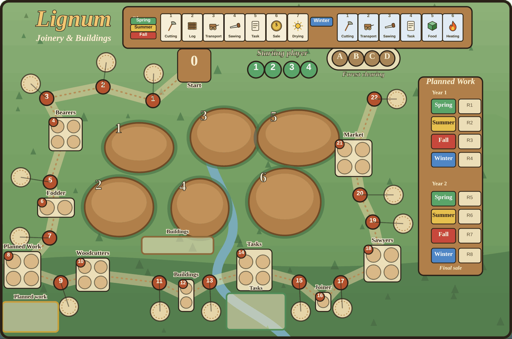
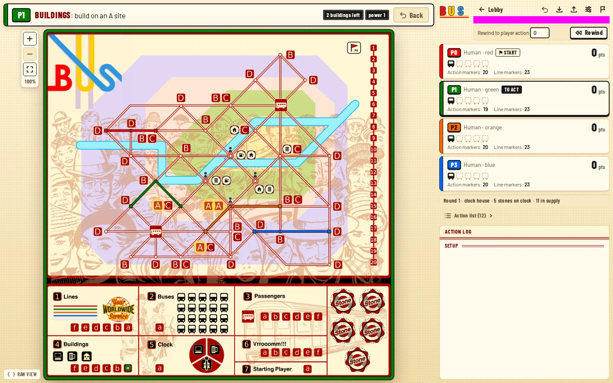

Reinforcement learning agents for board games
I'm implementing modern strategy board games as OpenSpiel environments and training reinforcement learning agents to play them, with a small web UI so I can play against what I train. More games will follow.
Disclaimer: Generative AI (Claude) was used to assist the implementation of this project and the writing of this page.
The King is Dead
github.com/taylordinkins/kingisdead
A full two- and three-player implementation of the area-control game The King is Dead (Peer Sylvester, Osprey Games), with a rules specification that every test cites, a browser UI, and random, heuristic and MCTS opponents.
Highlights: the RL agents
- Turns are split into small sequential decisions, giving a fixed 40-action space that a single masked policy/value network can act on.
- PPO self-play beat the heuristic bot about 2 games in 3 with no search, but lost to 100-simulation MCTS (40–42% wins).
- AlphaZero-style self-play (network plus 50-simulation MCTS, trained on about 22,000 games) won about 0.87–0.90 against the heuristic and 0.79–0.87 against 100-simulation MCTS. Search was essential: neither network was competitive with MCTS on its own.
Two-player games only, evaluated against built-in bots over a few hundred games with seats rotated (95% intervals roughly ±0.05–0.08). Three-player agents and testing against people are still to do.
Lignum
github.com/taylordinkins/lignum-openspiel
Lignum (Alexander Huemer, Capstone Games) is a heavy economic game about running a sawmill. Each round, players travel a supply path to hire workers and buy equipment, pick a forest area to cut, then haul the wood home by river or wagon, saw it, dry it and either sell it or use it to fill orders (tasks). Two winters must be survived with enough food and firewood, and the richest player at the end wins. The implementation covers the second edition with the Joinery and Buildings expansion for 2–4 players, with a browser UI, hotseat play and several bots.

As an RL problem it is much harder than The King is Dead. A two-player game has about 550 decisions, players' choice of cutting area is hidden until revealed, and the score is each player's own money rather than a win or loss. Rewards are also delayed: wood cut in one season may only pay off two rounds later, once it has dried enough to complete an order.
How the bots are doing
All numbers are two-player games on the expansion board, measured as the bot's average final
money against heuristic-v6, a hand-tuned baseline. An experienced human scores
about $60 or more.
| Bot | $ per game |
|---|---|
| Hand-tuned heuristics (v1–v7, against each other) | ~20 |
| Strategist (scripted, plan-driven, no search) | 57–60 |
| AlphaZero-style search | 69.4 |
| Plan-level search + AlphaZero-style search | 72.5 |
| Claude Opus, as a reference (1 game) | 80 |
Standard error about $1 for the search bots (100 games on evaluation seeds not used in training); the strategist figure is over 200–3,000 games. The plan-search result still needs confirming on fresh seeds. The Opus result is a single game and only a point of comparison.
- Hand-tuning hit a ceiling. Seven heuristic versions improved winter planning and wood flow, but plateaued at about $20 a game. Several plausible changes (a task-first policy, a task planner, a value function fitted to game data) made no difference or made things worse.
- Plain MCTS failed at first. With random rollouts cut off at 15 moves in a 550-move game, search won only 15% against the heuristic, and more simulations made it worse. Playing rollouts out with the heuristic instead raised that to 76%.
- An LLM showed where the gap was. Claude Opus played a game and scored $80. Comparing its 263 decisions with the heuristic's, it agreed on routine moves but not on strategic ones: it chose orders whose wood needs overlapped, provisioned for winter early and built huts. Those ideas went into the scripted strategist, which wins 93% of games against the heuristic.
- AlphaZero-style search on top. A policy/value network is first trained to imitate the strategist, then on games where the strategist's choice is occasionally swapped for an alternative, so the value head learns what those alternatives are worth. Search runs only at strategic decisions, with the strategist handling routine wood handling. Almost all of the gain over the strategist comes from completing more orders. Adding a search over whole-round plans brings it to $72.5.
Training so far is small: about 6 GPU-minutes and one self-play iteration, which did not improve the score, because the search still assumes the strategist plays the rest of the game. Next steps are plans that commit to several orders across rounds, and policy-gradient fine-tuning of the network so it can eventually replace the strategist inside the search.
Bus
github.com/taylordinkins/Bus-openspiel
Bus (Jeroen Doumen and Joris Wiersinga, Splotter Spellen) is a tight, highly interactive network game for 3–5 players. Each round, players take turns placing a limited supply of action markers on one shared action board, then the actions resolve in a fixed order: extend your bus line, add buses, bring passengers into the train stations, put up new buildings, turn the clock that decides whether passengers want to go home, to work or to the pub, and finally drive them there for points. Every space you take is one another player can't, and how strong an action is depends on how early you claimed it and on how many buses the leading player has. The implementation covers the Complete Edition rules for 3–5 players, with a browser UI, hotseat play and several bots.

Much more of Bus is shared than in the other two games: the action board, the passengers, the buildings and even the streets, since bus lines can run alongside each other. The value of nearly every decision depends on what the other players do with it that round, which makes a policy harder to optimise and also makes it harder to write a strong hand-crafted heuristic to train and evaluate against.
How the bots are doing
| Bot (four-player games) | Opponents | Win rate |
|---|---|---|
| Heuristic (hand-written, greedy) | 3 random | 73% |
| MCTS, 200 simulations | 3 random | 95% |
| MCTS, 200 simulations | 3 heuristic | 34% |
| PPO self-play, 20-minute run | 3 heuristic | 93% |
One bot against three copies of the opponent, seats rotated, so 25% is an even share. 100–200 games per row (95% intervals roughly ±0.05–0.09).
- Search alone barely beats the heuristic. MCTS with random rollouts crushes random play but wins only about a third of games against three heuristic bots, just above an even share.
- PPO from scratch learns quickly. With no imitation learning, a 20-minute self-play run on 8 CPU workers (about 54,000 games against itself, past snapshots and the built-in bots) wins 93% of games against three heuristic bots.
- Search on top of the network hasn't paid off yet. Using that network as the prior and value inside MCTS won slightly more often against the heuristic (95% vs 90%), but did no better than the network itself when the two played each other.
In progress: a longer league-training run (mixed 3-, 4- and 5-player games, a hall of fame of past snapshots that new versions must keep beating) and work on reward shaping, currently a blend of win/loss and score margin that is annealed to pure win/loss.
Work in progress; this page will be updated.